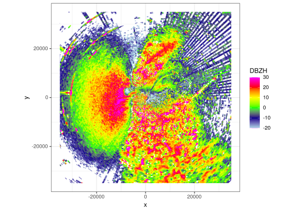
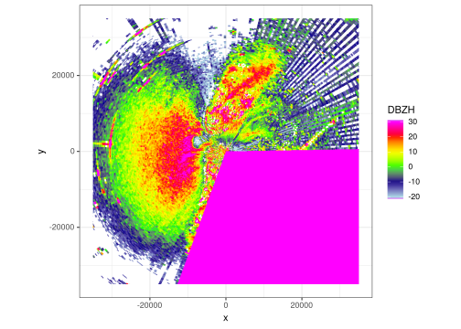
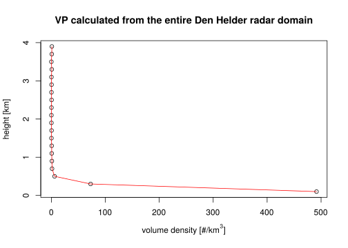
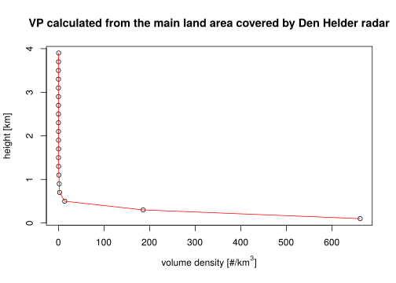

10 Generating vertical profiles for Den Helder radar
The Den Helder radar is situated very close to the coast, so take-off densities derived from the calculate_vp() function in bioRad (Dokter et al. 2019) are likely underestimated as large swaths of sea (both North and Wadden Sea) are contained within the volume. To correct for this, we will select a section, defined by minimum and maximum azimuths, to generate the vertical profiles for.
We load the DBZH from the polar volume containing the peak moment of take-off for the Den Helder radar, which occurs at 23:05 UTC.
library(bioRad)
pvol_path <- "data/raw/pvol/fireworks-2017-2018/RAD_NL61_VOL_NA_201712312305_ODIM.h5"
pvol <- read_pvolfile(pvol_path, param = "DBZH")To illustrate the problem, let’s plot the lowest scan of the pvol we have loaded:

As can be seen, there is a large swath of sea clutter, roughly between azimuths 200 and 325. The Wadden Sea can be seen from azimuths 45 until roughly 90. The area in between is where the majority of birds take off: the mainland of North Holland. We can visualise what a focus on this area would cover by plotting a PPI where all values between azimuths 90 and 200 have been set to a very high value. See below:
scan_section <- scan
scan_section$params$DBZH[, 90:200] <- 100
ppi <- project_as_ppi(scan, grid_size = 100, range_max = 35000)
ppi_section <- project_as_ppi(scan_section, grid_size = 100, range_max = 35000)
par(pty = "s", mfrow = c(1, 2))
plot(ppi)

Now with that in mind we can calculate the vps for the entire area and compare that with one that is calculated just from the section above (azimuths between 90 and 200).
vp_all_azimuths = calculate_vp(pvol_path, verbose = FALSE)
vp_land_based_azimuths = calculate_vp(pvol_path, azim_min = 90, azim_max = 200, verbose = FALSE)And plot the corresponding VPs:


We can see there is a substantial difference in density derived from the VPs when focussing on the main land of North Holland vs. when we look at the entire radar domain and include large swaths of the North and Wadden Sea.
References
Dokter, Adriaan M., Peter Desmet, Jurriaan H. Spaaks, Stijn van Hoey, Lourens Veen, Liesbeth Verlinden, Cecilia Nilsson, et al. 2019. “bioRad: Biological Analysis and Visualization of Weather Radar Data.” Ecography 42 (5): 852–60. https://doi.org/10.1111/ecog.04028.